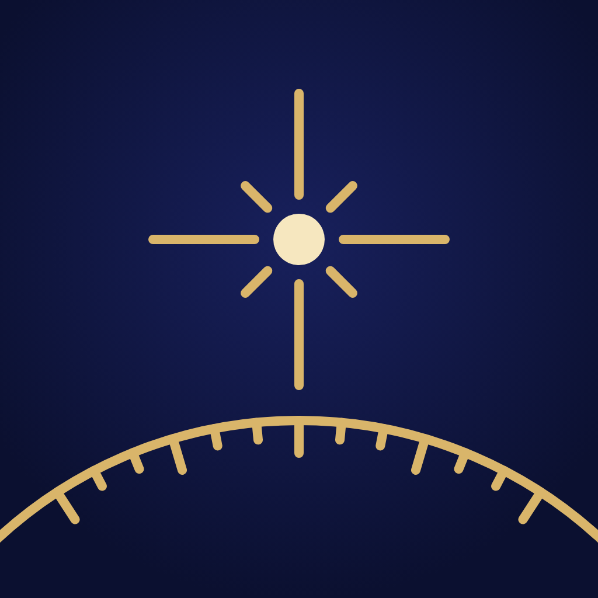

Mitovi šest tradicija
Čitajte priče, upoznajte mitska bića, pratite povezane odrednice i istražite beleške o izvorima.
iPhone · iOS 18+
Istražite mitove i bića šest tradicija, otkrijte priče iza sazvežđa i vodite besplatan privatni dnevnik snova. Engleski i srpski. Bez interneta.
U pripremi za App Store.
Podrška
Čitajte priče, upoznajte mitska bića, pratite povezane odrednice i istražite beleške o izvorima.
Istražite dvanaest tradicionalnih zvezdanih figura i pratite svaku do njenog mita. Mesečev kalendar omogućava pregled mena i datuma.
Besplatno zapišite, sačuvajte, izmenite i ponovo pročitajte snove. Simboli iz zapisa vode do folklornih odrednica.
Nebnik Plus trajno otključava celu biblioteku mitova i bestijarij. Odvojena kupovina Sanovnik otključava ceo folklorni rečnik. Kupovine ne uključuju jedna drugu. Kalendar neba, atlas i ceo dnevnik su besplatni. Bez pretplate i obnove.
Proračuni neba su približni, koriste 12:00 UTC i ne prikazuju vidljivost iznad lokalnog horizonta. Mitovi i asocijacije simbola su kulturni sadržaj.